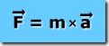
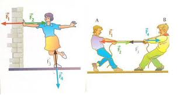

|
CONCEITOS DE FÍSICA |
Física Clássica Física Moderna |


Física Clássica
Sumário
|
|
1ª Lei de Newton
Todo corpo continua em seu estado de repouso ou de movimento uniforme em uma linha reta, a menos que seja forçado a mudar aquele estado por forças aplicadas sobre ele.
Voltar ao Topo
2ª Lei de Newton
A mudança de movimento é proporcional à força motora imprimida, e é produzida na direção de linha reta na qual aquela força é imprimida.
Voltar ao Topo
3ª Lei de Newton
A toda ação há sempre uma reação oposta e de igual intensidade: ou as ações mútuas de dois corpos um sobre o outro são sempre iguais e dirigidas em sentidos opostos.
Voltar ao Topo
Leis de Kepler
- 1ª Lei de Kepler: Cada planeta desloca-se ao redor do sol em uma elipse com sol em um dos focos.
- 2ª Lei de Kepler: O raio vetor do sol ao planeta percorre áreas iguais em intervalos de tempos iguais.
- 3ª Lei de Kepler: Os quadrados dos períodos de 2 planetas quaisquer são proporcionais aos cubos dos eixos semimaiores de suas respectivas órbitas.
Voltar ao Topo
Lei da Gravitação Universal
Cada objeto no universo atrai todos os outros objetos em uma força que, para dois objetos quaisquer, é proporcional à massa de cada um, e varia inversamente ao quadrado de distância entre eles.
Voltar ao Topo